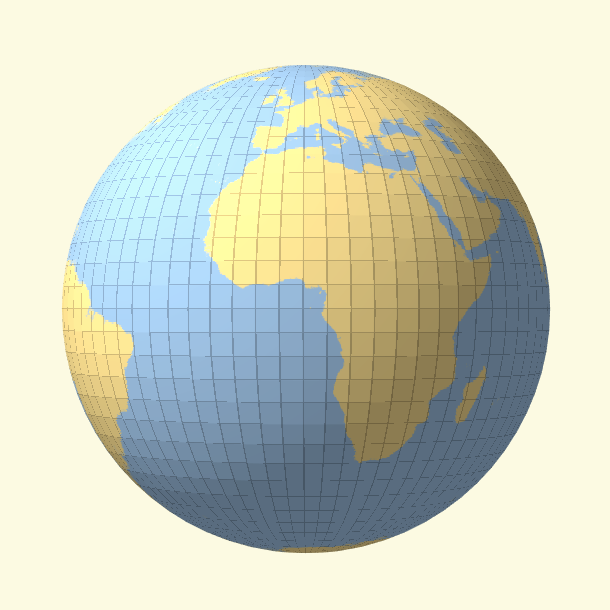

Unfolding the Earth: Myriahedral Projections

Loading...(avg. load time ~8s)
Myriahedral Projections combine map projection and origami techniques to provide maps without area or angle distortion (at the expense of many interrupts). This technique was developed by Jarke van Wijk in 2008. The demo celebrates the tenth anniversary of this paper.
Explore the projections below:-
Recursive Subdivision:
- Tetrahedron
- Cube
- Octahedron
- Icosahedron
-
Platonic Solids:
- Tetrahedron
- Cube
- Octahedron
- Dodecahedron
- Icosahedron
-
H3:
- H3(0) Sealine
- H3(1) Sealine Unfold:
Made by @philogb.